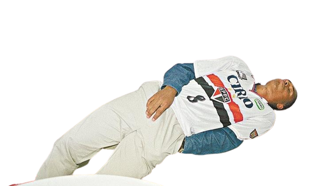

Os jogadores de futebol precisam ter uma boa estrutura física, e devem permanecer assim com um físico sempre adequado abaixo do seu peso.
Para você saber o peso ideal para você e de qualquer tipo de atleta podemos
usar
a fórmula do IMC(Índice de Massa Corporal)
Calcule o IMC de qualquer jogador e descubra se ele está acima do peso!
